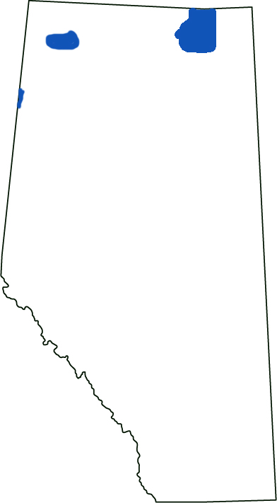

Wood Bison
Scientific Name: Bison bison athabascae
Detailed Status: Endangered
Population: 2500
Wood bison are similar to plains bison which also occupy Alberta but the wood bison are known for their small, non-migrating herds. They were a very important food source for the First Nations of Canada who used every part of the animal. Their furs and meat was a very important part of the fur trade for the Europeans. They almost went extinct in the late 19th century due to the demands of the fur trade. Wood Buffalo National Park has one of the largest populations of wood bison in Canada.
Range
